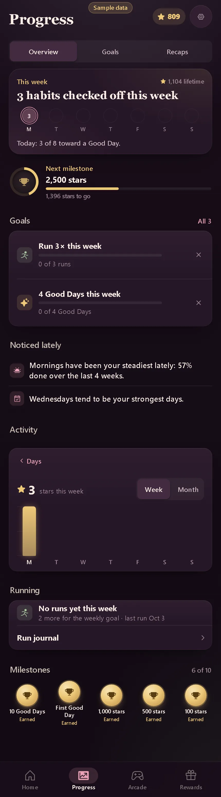

Progress · Activity switched to the stars chart
- Area
- Progress
- Screen 18 of 54
- progress-activity-stars
- Capture
- full scrolling page (430×1544), demo time 15:00, sample data
- Image
- img/18-progress-activity-stars.webp

Text on this screen
Progress Overview Goals Recaps This week 1,104 lifetime 3 habits checked off this week 3 M T W T F S S Today: 3 of 8 toward a Good Day. Next milestone 2,500 stars 1,396 stars to go Goals All 3 Run 3× this week 0 of 3 runs 4 Good Days this week 0 of 4 Good Days Noticed lately Mornings have been your steadiest lately: 57% done over the last 4 weeks. Wednesdays tend to be your strongest days. Activity Days 3 stars this week Week Month M T W T F S S Running No runs yet this week 2 more for the weekly goal. Last run Oct 3 Run journal Milestones 6 of 10 10 Good Days Earned First Good Day Earned 1,000 stars Earned 500 stars Earned 100 stars Earned First star Earned 2,500 stars 1,104/2,500 50 Good Days 12/50 3 in a row 1/3 7 in a row 1/7